1. Lecture Objectives
This lecture introduces explainability in machine learning by defining what constitutes an explanation and why explanations matter for transparency, trust, and debugging. We study major explanation paradigms, including indirect explanations (e.g., activation visualization, nearest neighbors, and embedding projections) and direct explanations (e.g., saliency via occlusion or feature importance). We then develop targeted explanations framed as question-driven reasoning—why a model predicts a class, what would change under counterfactual modifications, and why one class is preferred over another—using Grad-CAM and its extensions such as Counterfactual-CAM and Contrast-CAM. Finally, we examine how explanation quality is evaluated through human evaluation, application-based evaluation using human attention signals (e.g., gaze tracking and pointing game), and network-based evaluation using masking as well as progressive pixel-wise insertion and deletion metrics.
2. What constitutes an explanation in Machine Learning?
An explanation in machine learning provides insight into how and why a model makes specific predictions or decisions. A wide range of techniques has been developed to generate such explanations, each targeting different aspects of a model’s structure or behavior.
Visualizing weights across different layers helps reveal the importance of input features and how they influence subsequent layers in a neural network. For example, visualizing convolutional filters in CNNs can highlight which image regions are most critical for feature extraction. Similarly, visualizing activations in intermediate layers provides a clearer picture of how data transforms as it passes through the network, helping illustrate the progression of feature abstraction (see Figure 1).
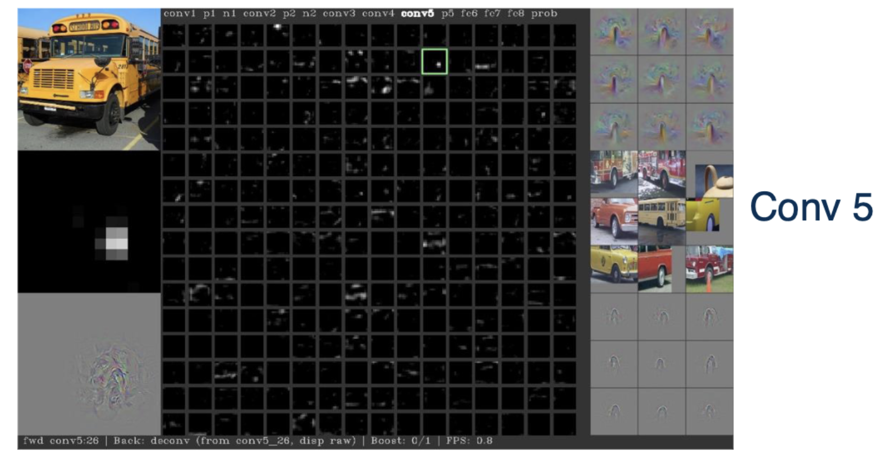
This type of visualization highlights how internal feature representations evolve across layers and provides intuition about what the network has learned.
Explanations can also focus on the relationships between data points. Nearest neighbor samples reveal which training data points are most similar to the test input in the learned feature space, providing interpretable evidence for predictions.
Techniques like dimensionality reduction (e.g., t-SNE, PCA) project high-dimensional data into a lower-dimensional space, helping visualize clusters or patterns that the model relies on.
At the pixel level, saliency maps illustrate the importance of specific input pixels to a model’s output. These can be generated via feature importance measures or interventions, such as systematically occluding parts of an input to observe the impact on predictions. Among these approaches, pixel-level saliency methods based on feature importance are computationally efficient and often generalize well across tasks. However, the quality of an explanation is subjective and context-dependent; for instance, visualizing activations in intermediate layers may provide better qualitative insights than weight visualizations, depending on the task. Ultimately, effective explanations strike a balance between informativeness, computational efficiency, and ease of interpretation for the target audience.
2.1 Types of explanations
2.1.1 Indirect Explanations
Indirect explanations offer auxiliary information that helps interpret the underlying patterns the model is recognizing. For example, maximally activated patches in an image classification model show the regions of an input image that most strongly activate a particular feature detector, such as edges or textures (see Figure 2).
This can be visualized by highlighting specific patches or areas in an image that cause the highest activations in intermediate layers, revealing the key elements that the model uses to identify objects. Similarly, activation visualizations track the activations of neurons in intermediate layers, helping to understand what features the model extracts as the input progresses through the network.
Dimensionality reduction techniques like t-SNE can be applied to the final embeddings of a model, projecting high-dimensional features into 2D space to reveal how well the model clusters data points from different classes.
Another example, nearest neighbor samples, show which training samples are closest to a given test sample in the feature space, explaining the model’s decision by comparing it to similar cases. All these methods indirectly explain a model’s behavior by illustrating how it processes and organizes input data.
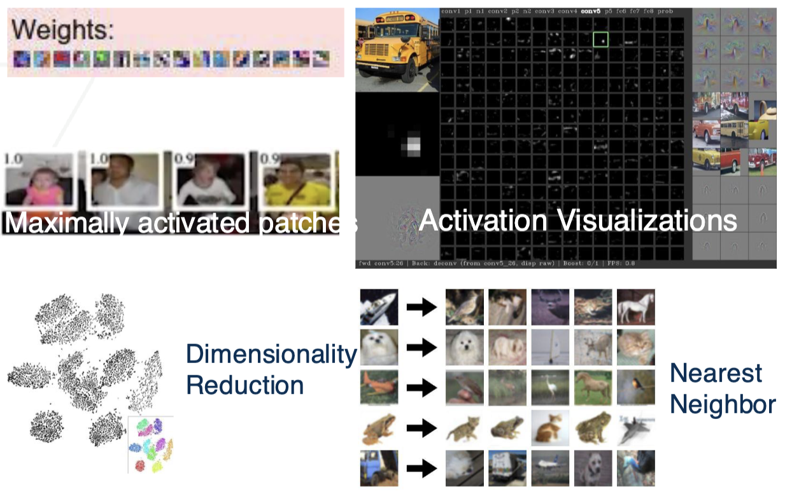
These examples illustrate how indirect explanations provide insight into the learned representations and structure of the feature space without directly attributing importance to individual input features.
2.1.2 Direct Explanations
Direct explanations aim to explicitly describe how a model reaches a particular decision or prediction. A good example of a direct explanation is using saliency maps via occlusion to understand which parts of an image influence the model’s decision.
For instance, consider an image of an elephant (see Figure 3): by occluding (masking) different sections of the image and observing how the model’s confidence in predicting the label (elephant) changes, we can identify which pixels or regions are most important for the model’s classification. If masking the elephant’s trunk decreases the probability of predicting "elephant," we can directly infer that the trunk is a key feature for this decision. Another direct explanation technique is saliency via feature importance, where the model highlights specific features (e.g., pixels or regions in the image) based on their contribution to the output. For example, in a classification task, the model might use a heatmap to visually emphasize areas of the image that contribute most to the predicted class.
In the case of an elephant image, the heatmap might highlight the elephant’s ears or tusks, directly correlating these areas with the model’s decision-making. These methods provide concrete and interpretable answers to the question, "Why did the model make this prediction?" by showing exactly which parts of the input influenced the outcome.
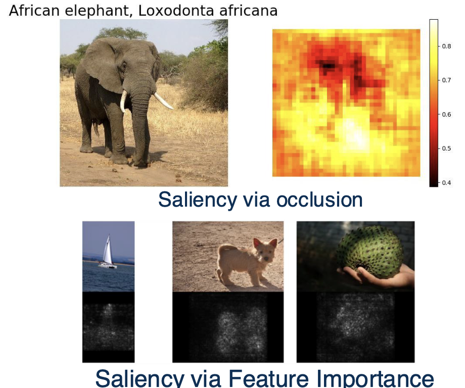
These examples demonstrate how direct explanations attribute importance to specific input regions, providing clear and intuitive justification for a model’s predictions.
2.1.3 Targeted Explanations
Targeted explanations focus on answering specific questions about a model’s decision-making, often tailored to a particular user, task, or scenario. Unlike general explanations that provide an overall view of model behavior, targeted explanations are precise and question-driven. In machine learning, especially in image classification, these explanations commonly address three key questions: “Why P?” (correlation-based explanations), “What if?” (counterfactual reasoning), and “Why P rather than Q?” (contrastive explanations). Together, these paradigms help users understand predictions, evaluate model reliability, and reason about hypothetical scenarios.
2.1.3.1 Why P? — Correlation-based explanations
The question “Why Spoonbill?” seeks to identify the features that led the neural network to classify an image as a Spoonbill. The model may detect attributes such as a pink body or straight beak that strongly correlate with this class. Techniques such as saliency maps or feature attribution visualize these contributions by highlighting the regions most influential to the prediction.
For instance, a saliency map might emphasize the straight beak, indicating that it was a decisive feature. Correlation-based explanations align well with human reasoning and help build trust by showing that the model relies on meaningful and intuitive visual cues.
2.1.3.2 What if? — Counterfactual explanations
The question “What if?” explores hypothetical scenarios to test the robustness of the model. For example, one might ask: *What if the beak were curved instead of straight? Would the model still predict Spoonbill?*
To answer such questions, image features can be modified or perturbed and the resulting predictions analyzed. If changing the beak shape causes the model to switch its prediction to Flamingo, this suggests that beak shape is a crucial feature for the Spoonbill class. Counterfactual explanations are particularly actionable because they reveal how minimal changes can alter a prediction and help assess the reliability of the model.
2.1.3.3 Why P rather than Q? — Contrastive explanations
Contrastive explanations answer questions such as “Why Spoonbill rather than Flamingo or Fox?” by emphasizing differences between the predicted class and plausible alternatives.
For example, Figure 4 illustrates how the network may highlight the absence of an S-shaped neck when distinguishing a Spoonbill from a Flamingo. Similarly, differences in the neck, beak, and body structure help separate Spoonbills from foxes. By explicitly comparing competing classes, contrastive explanations mirror how humans reason about decisions and make the model’s logic more interpretable.
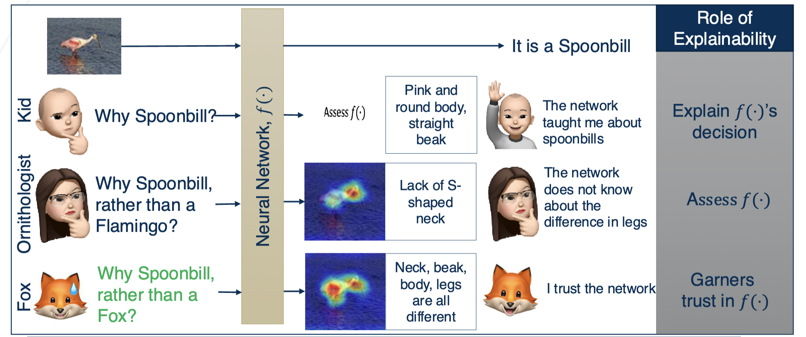
To further illustrate these paradigms, consider a second example in which a model classifies an image as a Bullmastiff (Figure 5):
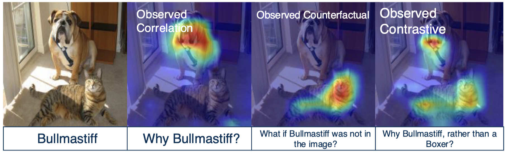
2.1.3.4 Why Bullmastiff? — Observed correlation
A correlation-based explanation identifies features strongly associated with the Bullmastiff class, such as a broad head, muscular build, and short coat. Visualization techniques like saliency maps or attention heatmaps may highlight the dog’s face and body, indicating which regions were most influential in the prediction. This reassures users that the model relies on relevant and intuitive visual characteristics.
2.1.3.5 What if Bullmastiff was not in the image? — Observed counterfactual
Counterfactual reasoning examines how changes to the image would affect the prediction. For example, what if the dog had a narrower head or less muscular build? Would the model still classify it as a Bullmastiff? If small modifications cause the prediction to switch to Boxer, this suggests the model relies on subtle morphological distinctions. Such analysis helps evaluate whether the model’s decision boundaries are reasonable and aligned with real-world expectations.
2.1.3.6 Why Bullmastiff rather than Boxer? — Observed contrastive
Contrastive explanations emphasize the differences between closely related classes. While Bullmastiffs and Boxers share similar coat textures, the Bullmastiff’s broader head and more muscular frame help distinguish it from the Boxer’s leaner build. Visualization of saliency maps or feature embeddings can further illustrate how the model separates these breeds in feature space.
2.2 Correlations through Grad-CAM
Grad-CAM not only helps explain a prediction, but can also probe what the network attends to when asked about an unrelated class. For example, given an image classified as a Bullmastiff, we can query Grad-CAM with questions such as “Why Blue Jay?” or “Why Boxer?” to test whether the highlighted evidence reflects meaningful, class-specific cues or generic (potentially spurious) correlations.
Grad-CAM Process
Forward Pass: Run the input through the CNN and record the last-layer convolutional feature maps \(A^k\). Let \(y^c\) denote the logit for the queried class \(c\).
Backward Pass: Backpropagate from \(y^c\) to obtain gradients \(\frac{\partial y^c}{\partial A^k_{ij}}\) for each feature map location \((i,j)\).
Gradient Aggregation: Compute per-map importance weights by global-average pooling: \[\alpha_k^c = \frac{1}{Z}\sum_{i}\sum_{j}\frac{\partial y^c}{\partial A^k_{ij}},\] where \(Z\) is the number of spatial locations in \(A^k\).
Weighted Activation Map: Form the class activation map \[L_{\text{Grad-CAM}}^c = \mathrm{ReLU}\!\left(\sum_k \alpha_k^c A^k\right).\]
Upsampling and Normalization: Upsample \(L_{\text{Grad-CAM}}^c\) to input resolution and normalize for visualization.
The overall workflow is illustrated in Figure 6.
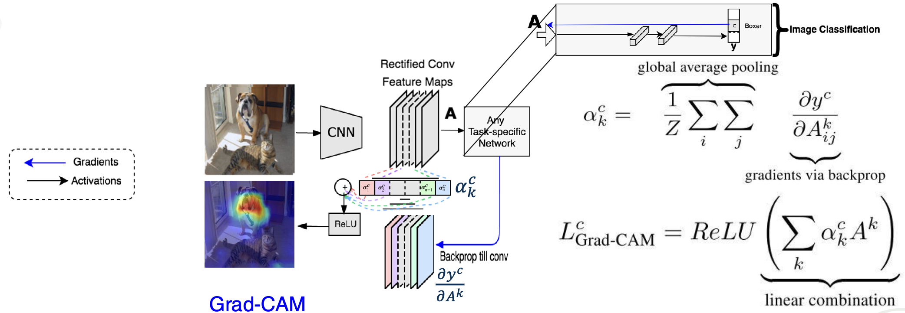
2.2.0.1 Observations for “Why Blue Jay?”
When the queried label is unrelated to the image content, Grad-CAM may still highlight similar regions (e.g., the dog’s head, body, or legs) regardless of the target class. While these regions are not informative for identifying a Blue Jay, they can reveal that the network is reusing generic, high-level cues (such as shape and texture) across classes. In other words, an unrelated query can expose a lack of class-specific focus under that query and help diagnose whether the model relies on broadly predictive features rather than truly discriminative evidence.
While Grad-CAM highlights evidence supporting a class prediction, we can go a step further and ask a complementary question: which regions would matter if the predicted class were absent?
2.3 Counterfactual-CAM: Exploring “What if \(P\) was not in the image?”
Counterfactual-CAM extends Grad-CAM by addressing counterfactual scenarios. Rather than explaining why a model predicts a particular class \(P\), it asks what regions would become important if class \(P\) were absent from the image. This provides insight into how strongly the model depends on evidence for class \(P\) and what alternative features might support other predictions.
Counterfactual-CAM Process
Counterfactual-CAM modifies the Grad-CAM procedure to suppress features related to a specific class \(P\), effectively answering the question, “What if \(P\) was not in the image?” The process involves:
Gradient Negation: Instead of directly using the gradients \(\frac{\partial y^c}{\partial A^k_{ij}}\), their negatives are used when computing the importance weights: \[\alpha_k^c = -\frac{1}{Z} \sum_{i} \sum_{j} \frac{\partial y^c}{\partial A^k_{ij}} ,\] where \(Z\) denotes the number of spatial elements in feature map \(A^k\).
Suppressing Influence: Using these negated gradients reduces the contribution of regions that positively support class \(P\).
Activation Map Computation: The counterfactual activation map is computed as \[L^c_{\text{Counterfactual-CAM}} = \mathrm{ReLU} \left( \sum_k \alpha_k^c A^k \right),\] highlighting regions that would remain informative if class \(P\) were absent.
Normalization and Visualization: The map is upsampled to match the input image resolution and normalized for interpretation.
The overall workflow is illustrated in Figure 7.
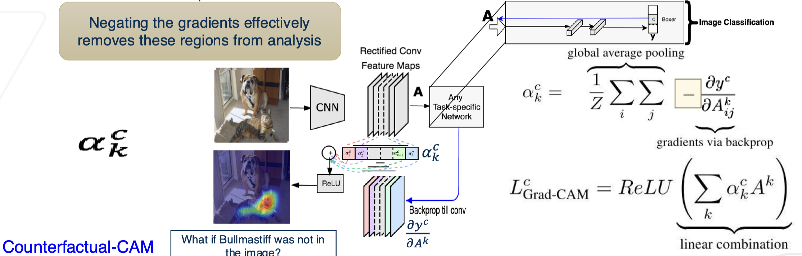
2.3.0.1 Example: “What if Bullmastiff was not in the image?”
Consider an image correctly classified as Bullmastiff. Counterfactual-CAM can simulate the absence of Bullmastiff-related evidence by suppressing the corresponding positive gradients. The resulting heatmap reduces emphasis on regions such as the dog’s head, body, and ears—features strongly associated with the Bullmastiff class. Instead, the map highlights alternative regions that may support other plausible classes (e.g., background objects or generic shapes).
This process effectively removes the Bullmastiff’s influence and reveals secondary features the model considers during prediction. Such analysis helps diagnose over-reliance on specific class evidence and provides insight into the hierarchy of features used for classification.
2.4 Contrast-CAM: Exploring “Why \(P\) rather than \(Q\)?”
Contrast-CAM extends Grad-CAM to explain why the model prefers one class over another. Instead of asking “Why class \(P\)?”, this method answers the more discriminative question “Why class \(P\) rather than class \(Q\)?”
By explicitly comparing two classes, Contrast-CAM highlights image regions that differentiate the predicted class from a competing alternative. This provides deeper insight into the model’s decision boundary, revealing which features support the chosen class and which contribute to confusion between classes.
Contrast-CAM Process
Contrast-CAM follows the Grad-CAM pipeline but replaces the single-class objective with a contrastive objective between two classes.
Let \(P\) denote the predicted class and \(Q\) a contrast class.
Forward Pass Pass the image through the CNN and extract the final convolutional feature maps \(A^k\). Let \(y^P\) and \(y^Q\) denote the logits for classes \(P\) and \(Q\).
Contrastive Backward Pass Instead of backpropagating a single class score, Contrast-CAM uses a contrastive score \[s(P,Q) = y^P - y^Q .\] Gradients are computed as \[\frac{\partial (y^P - y^Q)}{\partial A^k_{ij}},\] indicating how each spatial location contributes to distinguishing class \(P\) from class \(Q\).
Gradient Aggregation Importance weights for each feature map are obtained via global average pooling: \[\alpha_k^{(P,Q)} = \frac{1}{Z}\sum_i\sum_j \frac{\partial (y^P - y^Q)}{\partial A^k_{ij}},\]
Weighted Activation Map The contrastive class activation map is computed as \[L_{\text{Contrast-CAM}}^{(P,Q)} = \mathrm{ReLU}\!\left(\sum_k \alpha_k^{(P,Q)} A^k \right).\] This map highlights regions that support class \(P\) over class \(Q\).
Regions that contribute equally to both classes tend to be suppressed, making the resulting explanation more discriminative.
Upsampling and Normalization The map is upsampled to the input resolution and normalized for visualization.
The overall workflow is illustrated in Figure 8.
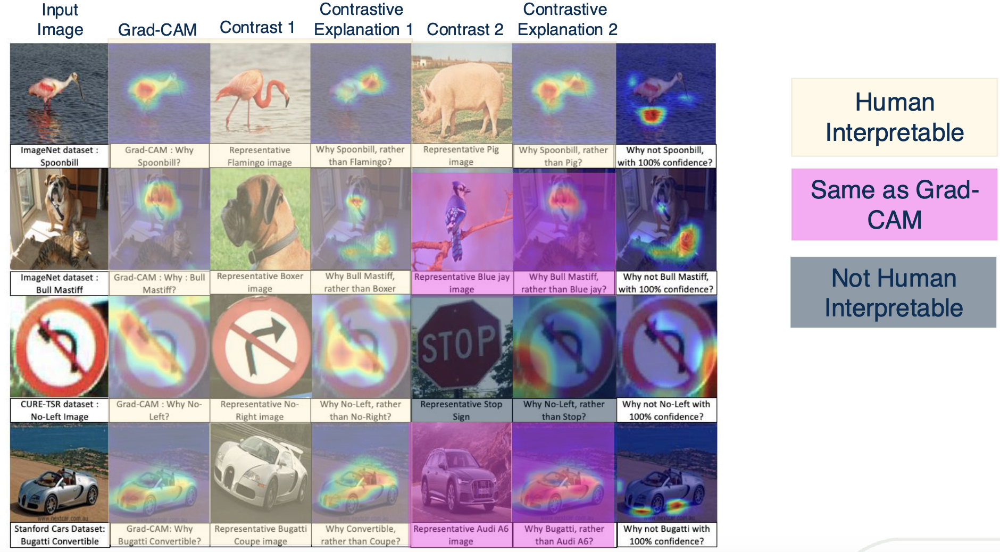
2.4.0.1 Example: “Why Bullmastiff rather than Boxer?”
Contrast-CAM reveals the features that make the network prefer the Bullmastiff class over the Boxer class. The resulting heatmap typically highlights discriminative features such as body shape, facial structure, and coat characteristics that distinguish the two breeds. Regions where the breeds appear visually similar may also be emphasized, revealing sources of model confusion.
2.4.0.2 Example: “Why not Bullmastiff with 100% confidence?”
Contrast-CAM can also explain model uncertainty by contrasting the predicted class by contrasting the predicted class with competing classes collectively (e.g., the next highest-scoring alternatives). The resulting heatmap highlights ambiguous or overlapping features—such as similar textures or shapes—that prevent the model from assigning full confidence to a single class.
3. Explanatory Evaluation: What Makes Some Explanations Better Than Others?
Visualizing activations is often considered more informative than visualizing weights in intermediate layers. Activations provide more interpretable insights because they show which features of the input directly contribute to the network’s predictions, making explanations more intuitive.
Pixel saliency (highlighting important pixels) is a useful technique for explaining model decisions because it reveals which parts of the input image the model considers most significant. Techniques that focus on pixel saliency or feature importance are often computationally less expensive than more complex gradient-based methods, making them faster and easier to implement while still providing meaningful interpretability.
3.1 Evaluation Metrics
Explanations should ultimately be evaluated based on how useful and meaningful they are in practice. Before introducing specific evaluation methods, it is helpful to identify the key criteria that define a good explanation.
Human interpretability measures whether explanations are understandable to humans and help users build trust in model predictions.
Model transparency evaluates whether explanations reveal insights about the model’s internal decision-making process and support model validation and reliability.
Operational usability assesses whether explanations can be used in practice to debug models, improve performance, or guide model refinement.
3.2 Explanatory Evaluation Taxonomy
Explanatory evaluation can be categorized into three complementary types based on the nature of the tasks and the role of human involvement.
Human Evaluation directly assesses explanations through human judgment. For example, a person may compare two explanations and decide which better answers the question, “Why Spoonbill?” This type of evaluation ensures explanations are intuitive and aligned with human reasoning.
Application Evaluation focuses on tasks that intersect with explainability but do not require humans to explicitly judge explanations. Instead, explanation quality is inferred through its impact on application-level metrics (e.g., testing whether a noisy image is still classified correctly).
Network Evaluation evaluates explanations indirectly through the behavior of the model itself. Techniques such as masking or insertion/deletion measure how strongly model predictions depend on the regions highlighted by an explanation.
The overall taxonomy is illustrated in Figure 9.
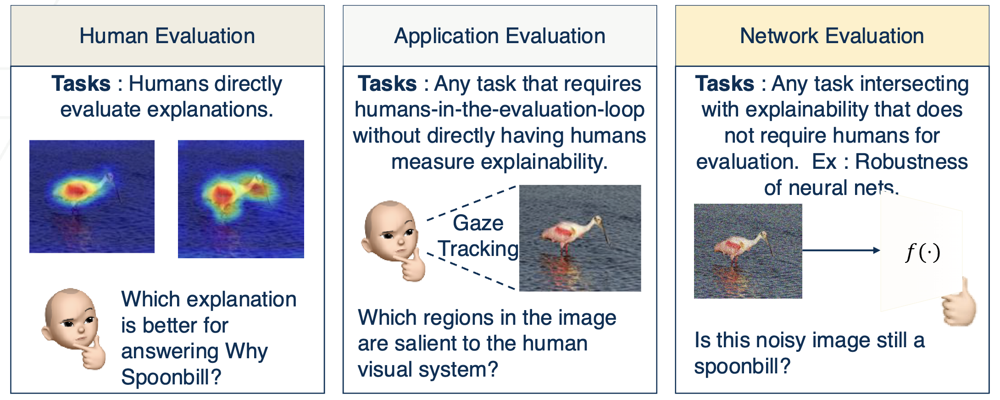
3.3 Human Evaluation of Explanatory Techniques
Human Evaluation focuses on directly involving humans in assessing the quality and effectiveness of different explanatory techniques. In this approach, individuals are presented with visualizations generated by methods such as Backpropagation, Deconvolution, and Guided Backpropagation and are asked to determine which technique provides a better explanation for the model’s decision. For example, they might compare whether one technique produces a "cleaner explanation" or a "class-discriminative explanation" that focuses more accurately on the relevant features. The subjectivity inherent in human evaluation arises from varied interpretations - should the explanation highlight the entire object (e.g., the whole cat) or just the salient features (e.g., the face)? These subjective preferences make human evaluation both insightful and challenging.
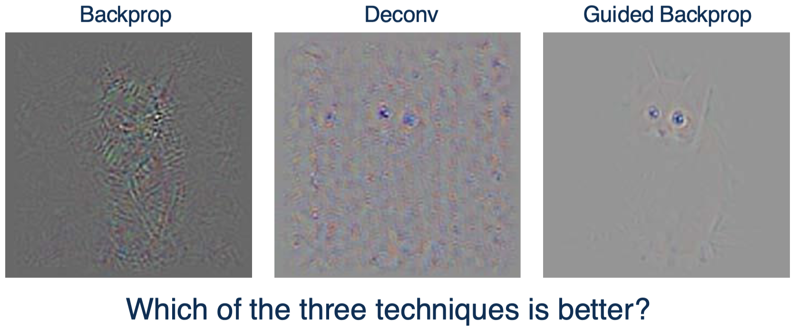
To address these challenges, it is important to mitigate biases and increase reliability. One effective method is to involve a large number of evaluators to reduce individual biases and improve generalizability. Additionally, evaluators should remain unaware of the researchers’ objectives to avoid influencing their responses. Guiding evaluators through structured questions helps focus their attention on specific aspects of the explanation while ensuring consistency across evaluations. For instance, asking, "Does this explanation highlight the most important features for the predicted class?" ensures clarity and uniformity in the assessment process. This structured approach helps balance subjectivity while preserving the human-centric focus of the evaluation.
While the comparison in Figure 10 illustrates qualitative differences between a small set of explanation methods in a controlled human-evaluation setting, researchers often conduct larger benchmark studies to evaluate how well different saliency and attention models align with human visual perception at scale. Such comparisons typically include both explanation methods and computational saliency models, enabling researchers to assess which approaches best approximate human fixation patterns across diverse scenes.
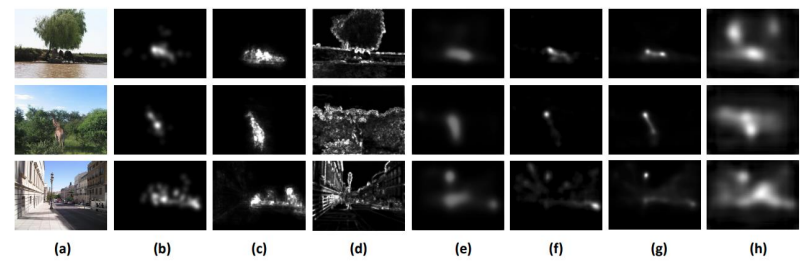
Figure 11 provides a side-by-side comparison of saliency maps generated by multiple explanation and saliency detection methods applied to the same input images. The subfigures correspond to:
(a) Input image
(b) Human ground-truth fixation map
(c) Proposed implicit saliency method
(d) Feed-forward feature saliency
(e) SalGAN
(f) ML-Net
(g) DeepGaze II
(h) ShallowDeep
Comparing these maps allows researchers to evaluate how closely different methods align with human visual attention. Methods that consistently highlight semantically meaningful regions and resemble human fixation maps are considered more human-aligned explanations.
3.3.1 Expanding Human Evaluation
To improve the reliability of human evaluation, it is essential to address inherent subjectivity by employing a structured methodology. For example, researchers can provide two explanations for the same input image, generated by different techniques, and ask participants to evaluate them based on specific criteria. One experimental setup asked 43 Amazon Mechanical Turk (AMT) workers to compare two explanations across 90 image–question pairs, evaluating whether the explanations were more aesthetically pleasing or more class-discriminative. This setup ensures that human responses are systematically gathered and analyzed.
However, human evaluation introduces challenges, including bias from question framing and uncertainty about how many participants are needed for reliable results. Additionally, the definition of explainability itself plays a critical role—participants may interpret questions differently depending on their understanding of what makes an explanation effective. To overcome these limitations, researchers can design unbiased, clear, and goal-oriented questions, ensure the sample size is representative, and anchor evaluations in specific attributes such as clarity, relevance, and discriminativeness. This structured methodology leverages human responses to assess explanations, aligning outcomes with a human-centric perspective on explainability.
3.4 Application Evaluation
Application evaluation involves humans in the evaluation loop without directly asking them to judge explanations. Instead, explanations are evaluated indirectly through tasks such as gaze tracking and the pointing game. These approaches analyze how humans interact with visual data and use this behavior as a proxy for assessing the effectiveness of explanatory models.
3.4.1 Human Attention as Ground Truth
Humans naturally focus on salient regions in an image when performing visual tasks. From a neuroscience perspective, the brain acts as an inference engine that prioritizes informative regions to support decision making. As a result, human attention patterns provide a useful proxy for identifying which image regions are most relevant for visual recognition.
This observation motivates application-based evaluation: if an explanation method highlights regions similar to those attended by humans, it is more likely to reflect meaningful and human-aligned reasoning. Figure 12 illustrates an example of human visual attention measured using gaze tracking.
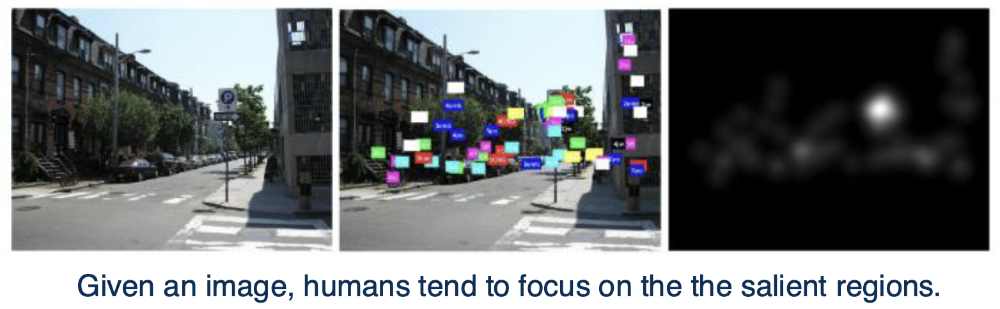
To quantitatively compare explanation maps with human attention, several metrics are commonly used:
Mean Intersection over Union (IoU) Measures the pixel-area overlap between predicted and ground-truth segmentation masks divided by their union.
Correlation Coefficient Evaluates the linear relationship between human-identified salient regions and model-generated saliency maps.
Pixel Accuracy Computes the fraction of correctly predicted pixels relative to the total pixels in the ground-truth mask.
3.4.2 Methods for Application Evaluation
The following experimental paradigms are commonly used to collect human attention data and evaluate explanations in practice.
Gaze Tracking Gaze tracking monitors eye movements to estimate where humans naturally focus when viewing an image. Because it captures spontaneous visual attention, it provides an unbiased measure of saliency. However, it requires specialized eye-tracking hardware and can exhibit noise and center-bias, where participants tend to focus near the image center regardless of task relevance.
Pointing Game The pointing game asks participants to refine a blurred image to make objects distinguishable, implicitly indicating regions they consider important. This method avoids the need for specialized equipment and can be conducted using large-scale platforms such as Amazon Mechanical Turk. It produces clean results by encouraging participants to sharpen specific regions of interest. However, it may introduce bias by influencing attention through highly tailored instructions.
Figure 13 shows examples of human attention collected using the pointing game.
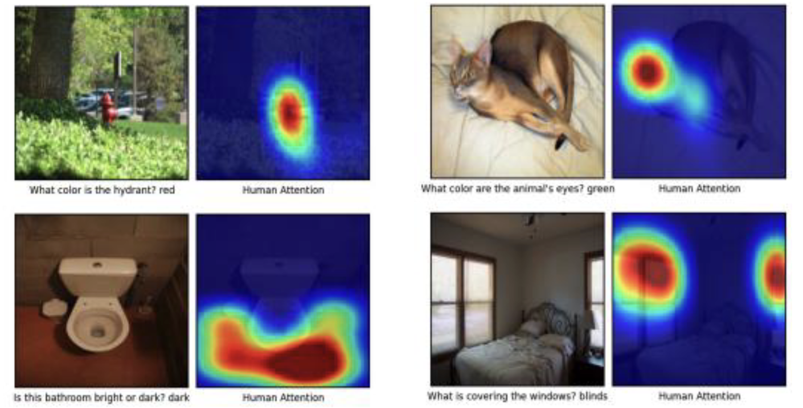
3.5 Network Evaluation in Explanatory Evaluation
Network evaluation assesses the quality and robustness of explanations without relying on human judgment. Instead of asking whether humans find an explanation convincing, this paradigm evaluates explanations through the behavior of the model itself. The key idea is that a good explanation should identify image regions that truly influence the model’s predictions.
A common strategy is to use masking or progressive pixel-wise insertion and deletion techniques, which measure how predictions change when important regions are removed or gradually revealed.
3.5.1 Explanation Evaluation via Masking
Masking techniques analyze the network’s response after modifying regions identified as important by explanation methods such as Guided Backpropagation or Grad-CAM.
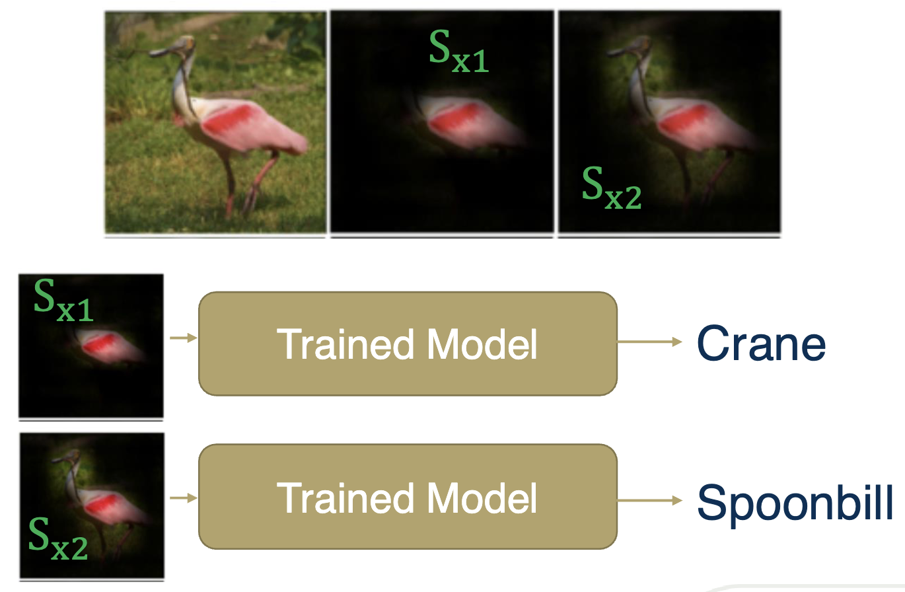
The central idea is simple: mask the regions identified as important and observe how the network’s predictions change. If removing highlighted regions significantly degrades performance, the explanation is likely identifying truly important features.
This approach is commonly quantified using the expectation of class predictions: \[E(Y \mid Sx),\] where \(Sx\) denotes the masked input based on an explanation map and \(Y\) represents the predicted class.
In Figure 14, the image on the right retains more relevant regions after masking than the image on the left, leading to a higher probability of correct prediction. Quantitatively,
\[E(Y \mid Sx_2) > E(Y \mid Sx_1) \quad \Rightarrow \quad \text{Explanation technique 2 is better than technique 1.}\]
A key limitation of masking-based evaluation is that larger explanation regions often preserve more information and therefore yield better performance. However, overly large explanations may lack precision. Ideally, explanations should be both faithful and minimal, highlighting only the most critical evidence for the model’s decision.
3.5.2 Progressive Pixel-wise Insertion and Deletion
Another widely used network-based evaluation strategy measures how the model’s confidence for a target class changes as we progressively remove or reveal image evidence in the order suggested by an explanation map. Intuitively, a faithful explanation should identify pixels or regions whose removal rapidly hurts the prediction and whose addition rapidly restores it.
3.5.2.1 Heatmap (region) masking vs. pixel-wise masking.
Two closely related masking strategies are commonly used: (i) heatmap (region) masking, where a thresholded explanation map is used to select contiguous high-importance regions for masking, and (ii) pixel-wise masking, where individual pixels are ranked by their importance scores and removed or revealed sequentially (often in small batches). Pixel-wise masking provides a finer-grained evaluation and forms the basis of the deletion and insertion benchmarks.
3.5.3 Pixel-wise Deletion
Pixel-wise deletion sequentially removes pixels from the input in decreasing order of explanation importance (see Figure 15). At each step, selected pixels are replaced with a baseline value (e.g., a blurred image, constant gray value, or dataset mean), and the modified image is re-evaluated by the network.
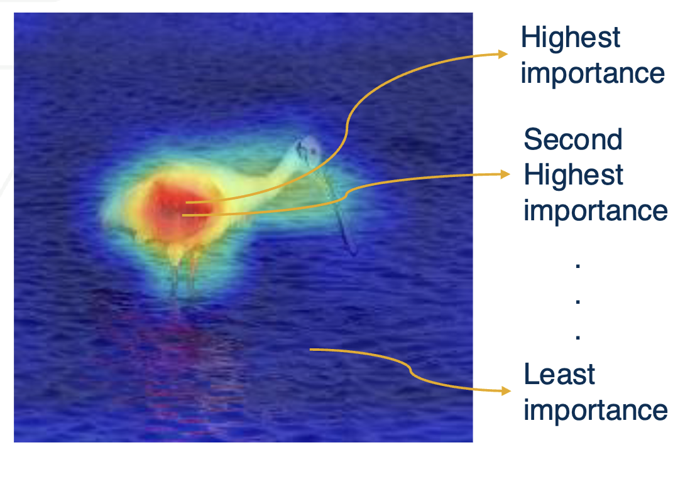
This procedure produces a deletion curve: the model’s confidence for the target class plotted against the fraction of pixels removed (see Figures 16 and 17). If the explanation correctly ranks the most important pixels first, the confidence should drop rapidly, producing a small Area Under the Curve (AUC).
Lower deletion AUC indicates a better explanation, since removing the most important pixels quickly destroys evidence for the predicted class.
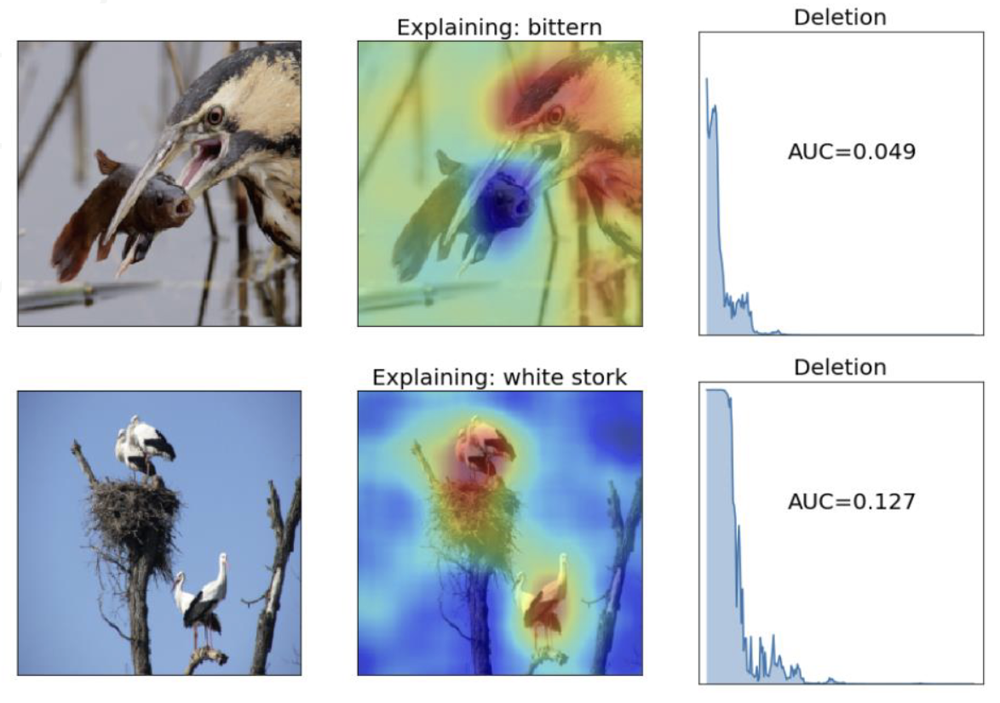
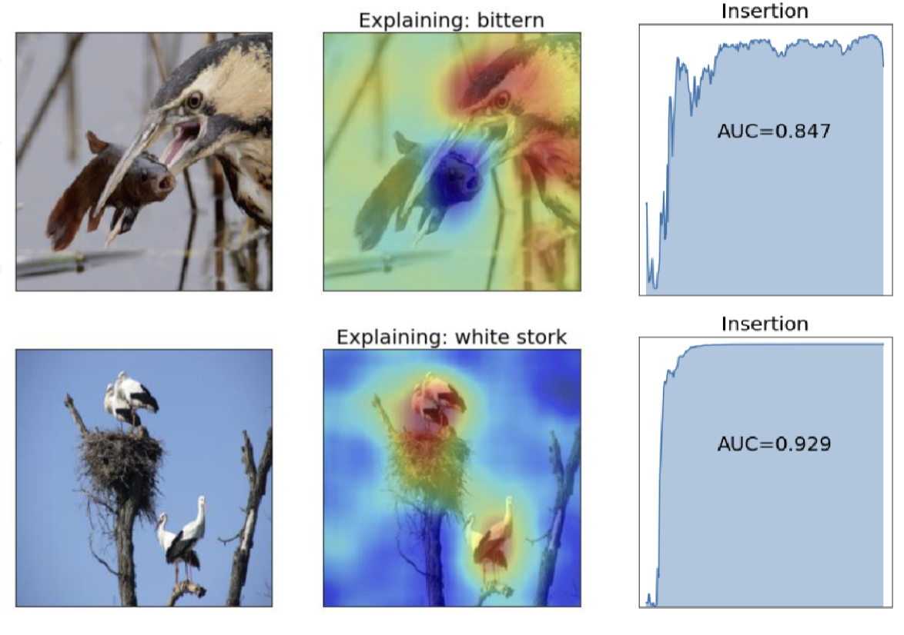
3.5.4 Pixel-wise Insertion
Pixel-wise insertion is the complementary experiment. We begin from a baseline image containing minimal information (e.g., blurred image, constant gray image, or noise) and then progressively add back pixels in decreasing order of importance. After each step, the model’s target-class score is recorded.
This produces an insertion curve: model confidence plotted against the fraction of pixels inserted (see Figure 18). A faithful explanation should reveal informative pixels early, causing confidence to rise quickly.
Higher insertion AUC indicates a better explanation, because the prediction recovers rapidly as important evidence is restored.
3.5.4.1 Notes and limitations.
Deletion and insertion metrics are attractive because they are fully automated and directly measure faithfulness to the model’s behavior. However, results depend on the chosen baseline (how masked pixels are replaced) and may favor large, diffuse explanations. In practice, pixels are often inserted or deleted in small batches (or via superpixels) to improve stability and computational efficiency.